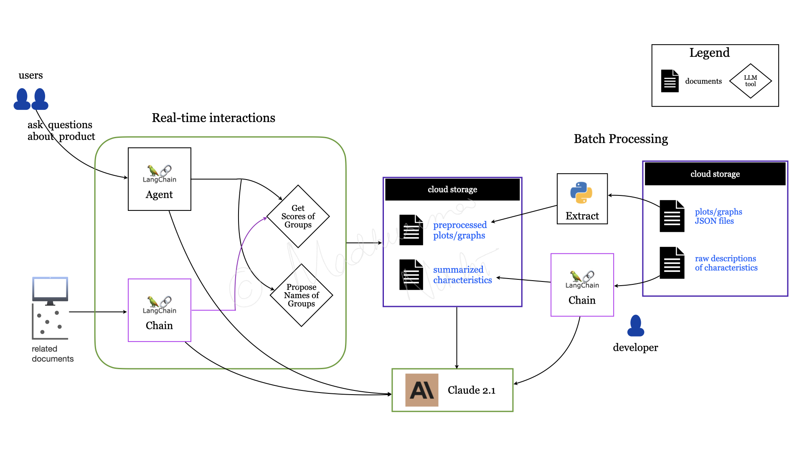
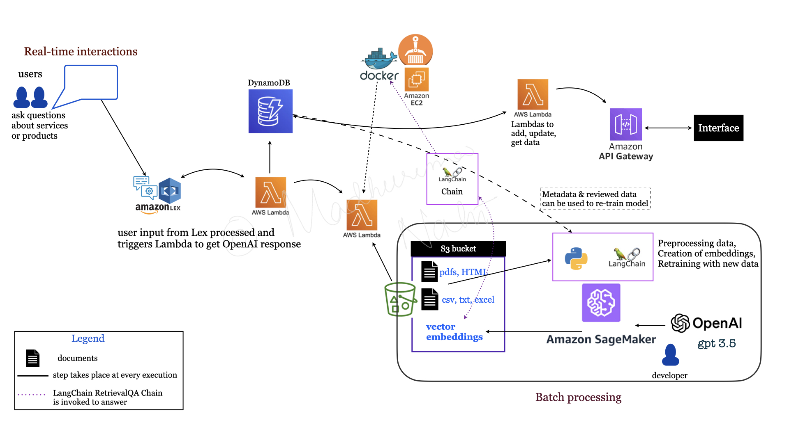

Two client engagements — financial services and equipment rental — using the same core approach: index existing documents into a searchable knowledge base, retrieve the most relevant content for each query, and generate a response using a large language model. The implementation differed in data types, infrastructure, and compliance requirements.
A major financial institution needed internal teams to find relevant products across a large, complex catalogue. Manual search was slow and inconsistent — the goal was a system that could take a natural language query and surface the right products with supporting context.
Built on Databricks with LangChain's agent framework and Llama as the LLM. MLflow handled experiment tracking and pipeline management. Compliance requirements for the financial sector were addressed throughout the build.

A leading equipment rental firm needed to help sales representatives respond to customer inquiries faster, reduce manual document searches, and support internal training. Subject matter experts (SMEs) needed to be able to review and correct any flagged response.
The knowledge base was built from the firm's existing documents — structured (CSV, JSON) and unstructured (PDF, HTML) — ingested into S3 and converted to embeddings using GPT-3.5. Chroma was used as the vector store. The RAG pipeline used LangChain's RetrievalQA Chain with a prompt template matching the client's requirements: answers formatted as lists where appropriate, with links to source documents.
The deployment ran on AWS:
Customer inquiry response time was reduced by 22%.
